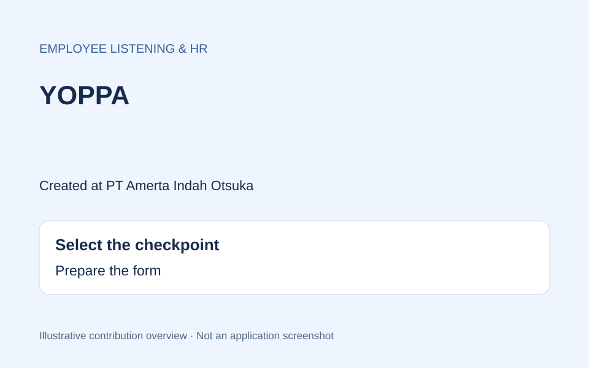

YOPPA at PT Amerta Indah Otsuka
I created YOPPA (Your Otsuka People Personal) as a form-based HR survey application. It supports employee engagement, satisfaction, and feedback at defined points in the employee journey.
The business need
Feedback at one month in a job answers a different question from feedback after a year. HR needs both milestone-based check-ins and recurring surveys, with enough context to understand when the feedback was collected.
Project focus
- Employee lifecycle surveys
Tenure-based checkpoints include one, three, and six months, one year, two years, and recurring annual surveys.
- Engagement and satisfaction surveys
Form-based feedback supports HR listening across the employee experience, alongside recurring annual surveys.
- Scheduled survey delivery
The employee-survey experience described in my CV includes a configurable scheduler with email and WhatsApp distribution, including lifecycle and exit-related feedback.
How the workflow connects
The diagram explains business responsibilities and information flow, rather than the former company’s internal deployment.
My contribution
I created the survey application and its configurable delivery workflow, supporting HR collection of engagement, satisfaction, and lifecycle feedback. The work connects the questionnaire with the timing and communication needed to reach employees.
Functional architecture
The functional flow connects survey forms, checkpoint or recurring timing, employee communication, and response collection. “Employee listening” describes the overall purpose; “employee lifecycle surveys” describes the milestone-based part. Annual engagement surveys complement those checkpoints.
Experience & lessons
YOPPA gives HR a structured way to listen at different moments in the employee journey. The design lesson is to keep a response connected to its survey purpose and timing: an onboarding checkpoint and an annual engagement survey should not be interpreted as identical signals.